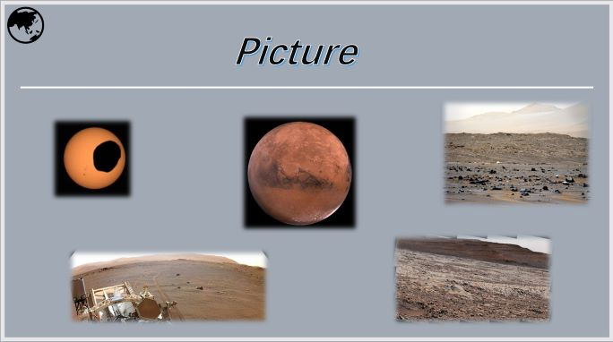
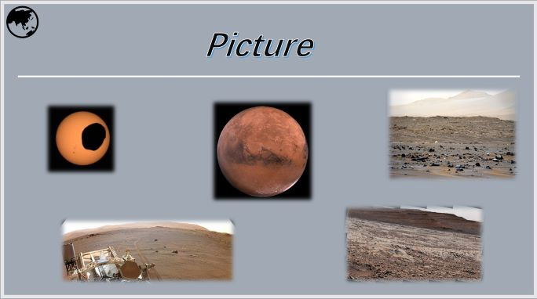

返回
基本参数
名称来源
探测历史
大黑斑
视频介绍
图片介绍
公转轨道:距太阳4504000000km(30.06天文单位)
行星半径:24718km(赤道)
质量:1.0247×10^26kg
卫星数:14颗
自转方向:自西向东
在古罗马神话中海王星（古希腊神话：波塞冬，Poseidon）代表海神。
发现：海王星是一个人们通过公式推算发现发现的行星，而并非有目的的观测。在天王星被发现后，人们注意到它的轨道与根据牛顿理论所推知的并不一致。因此科学家们预测存在着另一颗遥远的行星从而影响了天王星的轨道。Galle和d'Arrest在1846年9月23日首次观察到海王星，它出现的地点非常靠近于亚当斯和勒威耶根据所观察到的木星、土星和天王星的位置经过计算独立预测出的地点。一场关于谁先发现海王星和谁享有对此命名的权利的国际性争论产生于英国与法国之间（然而，亚当斯和勒威耶个人之间并未有明显的争论）；将海王星的发现共同归功于他们两人。后来的观察显示亚当斯和勒威耶计算出的轨道与海王星真实的轨道偏差相当大。如果对海王星的搜寻早几年或晚几年进行的话，人们将无法在他们预测的位置或其附近找到它。
访问：仅有一艘宇宙飞船旅行者2号于1989年8月25日造访过海王星。几乎我们所知的全部关于海王星的信息来自这次短暂的会面。
在旅行者2号造访海王星的期间，行星上最明显的特征就属位于南半球的大黑斑（The Great Dark Spot）了。黑斑的大小大约是木星上的大红斑的一半（直径的大小与地球相似），海王星上的疾风以300米每秒（700英里每小时）的速度把大黑斑向西吹动。旅行者2号还在南半球发现一个较小的黑斑极一以大约16小时环绕行星一周的速度飞驶的不规则的小团白色烟雾，得知是“The Scooter”。它或许是一团从大气层低处上升的羽状物，但它真正的本质还是一个谜。
然而，1994年哈博望远镜对海王星的观察显示出大黑斑竟然消失了。它或许就这么消散了，或许暂时被大气层的其他部分所掩盖。几个月后哈博望远镜在海王星的北半球发现了一个新的黑斑。这表明海王星的大气层变化频繁，这也许是因为云的顶部和底部温度差异的细微变化所引起的。
 
